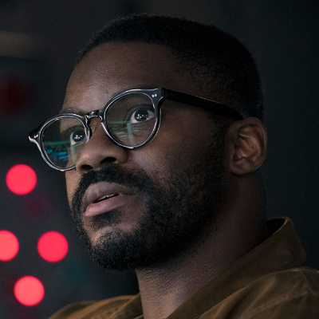

Grupo de Oxford
Saul Durand
Após tentativas de assassinato, é escolhido como Wallfacer pela ONU. Precisa entender por que os San-Ti o consideram perigoso.
Conteúdo até a temporada 1, episódio 8.
Ver Mapa de Conexões →HISTÓRICO DO PERSONAGEM
Temporada 1
Acompanhe os acontecimentos registrados até o episódio escolhido.
Episódio 01 — Countdown
Físico ligado ao laboratório de Vera Ye e amigo de Jin, Auggie, Jack e Will. Enfrenta a crise da ciência com ceticismo.
Episódio 07 — Only Advance
Recebe uma história enigmática de Ye e acompanha a despedida de Will.
Episódio 08 — Wallfacer
Após tentativas de assassinato, é escolhido como Wallfacer pela ONU. Precisa entender por que os San-Ti o consideram perigoso.
Personagens relacionados
- Vera YeLaboratório e pesquisa
- Auggie SalazarAmizade e proximidade
- Jin ChengAmigos de Oxford
- Will DowningAmigos de Oxford
- Ye WenjieConversa enigmática
- Clarence Shi (Da Shi)Proteção contra atentados
- Lilian JosephNomeação como Wallfacer